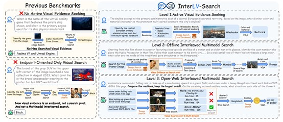
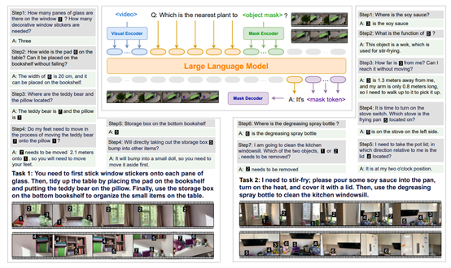
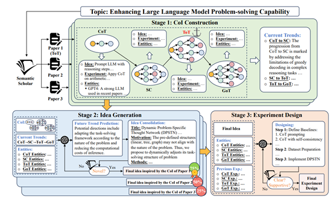
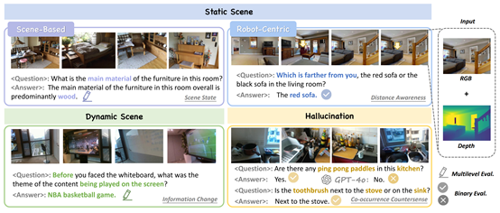
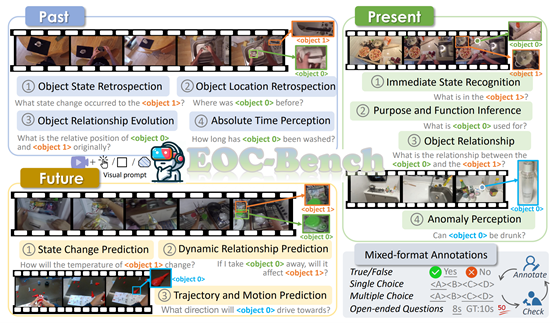
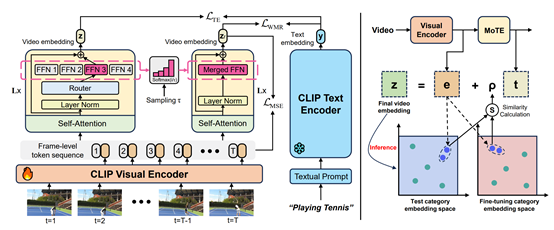
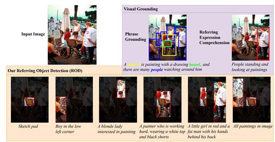
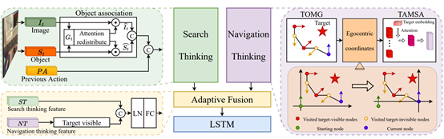
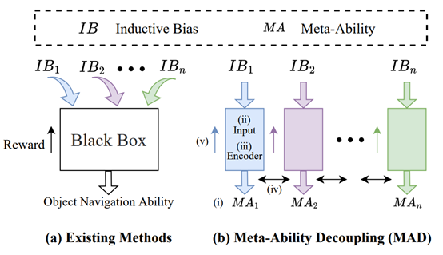
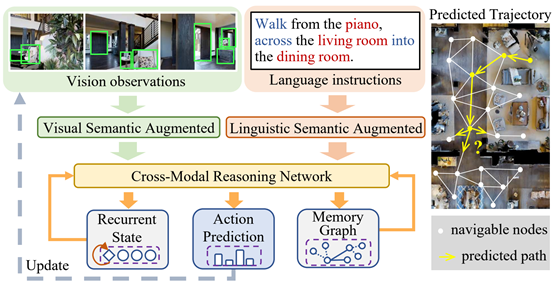

About
I am an AI Researcher at JD Explore Academy in Shanghai. My research focuses on Embodied AI, Multimodal Foundation Models, 3D Vision, and Reinforcement Learning. I am interested in building intelligent agents that can perceive, reason, plan, and act in complex physical environments.
I received my M.Eng. in Control Science and Engineering and B.Eng. in Automation from Tongji University. I am always open to research discussions and collaboration. Feel free to drop me an email.
Research Interests
Education
- M.Eng in Control Science and Engineering, Sep. 2021 - Jun. 2024
- Mentor: Prof. Chengju Liu (Google Scholar) and Prof. Qijun Chen (Google Scholar)
- National Scholarship, Ministry of Education of China, 2023
- B.Eng in Automation, Sep. 2017 - Jun. 2021
Experiences
 May 2026 – Present
May 2026 – PresentFocus on Embodied AI and Physical World Pretraining.
Focus on Embodied AI and spatial intelligence.
Focus on MLLM and multimodal generalization.
 Jan. 2020 – June 2020
Jan. 2020 – June 2020Focus on neural architecture search (NAS).
Publications













Selected Honors & Awards
- DAMO Academy's Excellence Award, Alibaba DAMO Academy, 2025.
- National Scholarship, Ministry of Education of China, 2023.
- Excellent Graduation Project, Tongji University (Quota: 2 recipients per year), 2021.
- Champion, Home League, RoboCup China Open, 2021.
- National Second Award, Artificial Intelligence Challenge Track, China Computer Design Competition, 2020.
- First Class Scholarship, Tongji University, 2018, 2020, 2022.